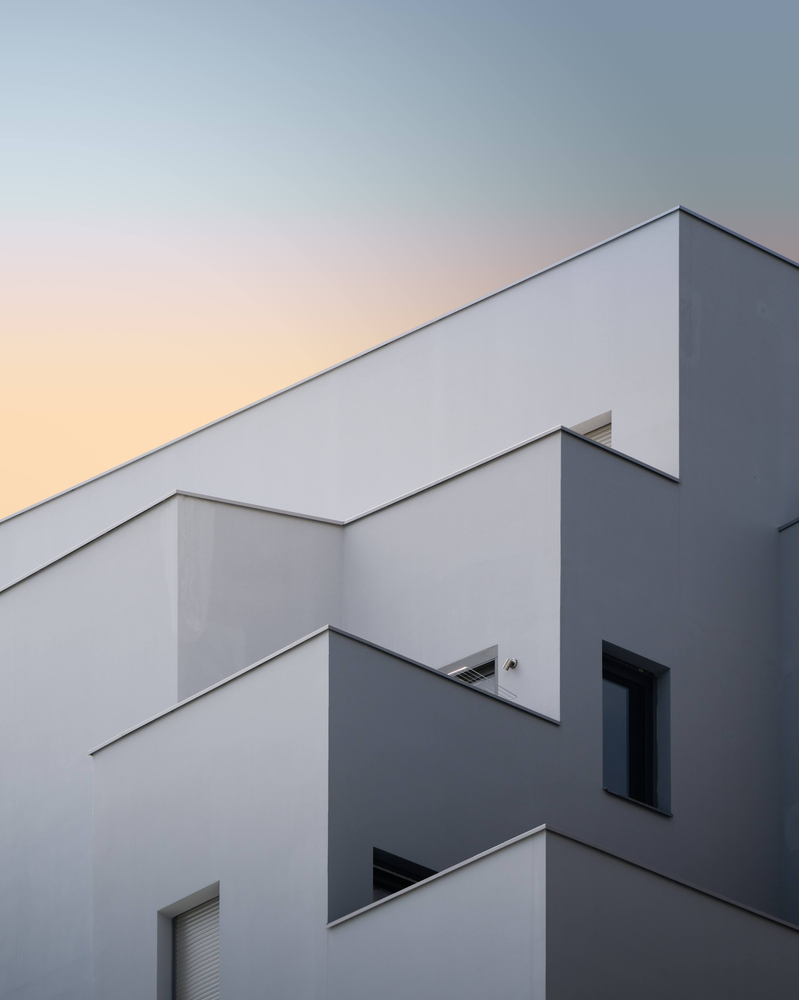
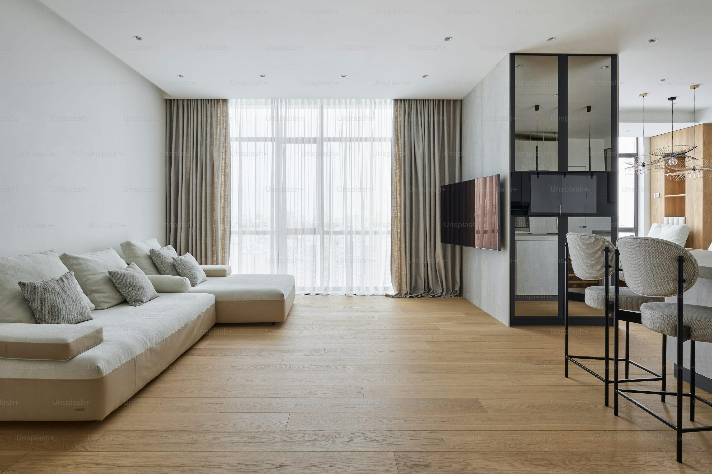

Casa Frejus
Il progetto d'interni ha intimamente intrecciato aspetti funzionali e formali attraverso un disegno su misura che rivela linee semplici ma dal forte impatto. La narrativa che sostiene il progetto lavora sul rapporto tra disegno degli interni e vedute esterne, essendo il paesaggio fortemente connotato dalla presenza dei maestosi gasometri dell'Italgas, un patrimonio della Torino industriale visibile in maniera quasi assidua dalle finestre dell'appartamento. La metrica a rombi della struttura dei gasometri è stata semplificata in una composizione di triangoli e sviluppata lungo la parete cieca del soggiorno. Non si tratta di una scenografia fittizia, ma di effettive controventature che supportano gli scaffali e la grande porta a tutta altezza. Laspetto industriale è accentuato dalla scelta di lampade tubolari e dall'utilizzo di policarbonato traslucido a rivestimento della porta e delle colonne cucina. Questi materiali sono impreziositi dalla presenza diNon si tratta di una scenografia fittizia, ma di effettive controventature che supportano gli scaffali e la grande porta a tutta altezza.
Luogo: Torino
Anno: 2023
Commitente: Privato
Tipologia: Residenziale
Superficie: 90 mq
Foto: Nicola Battaglino

